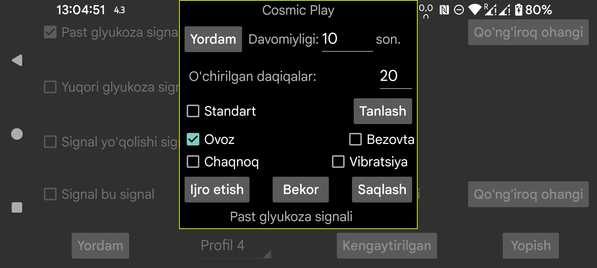

ar be de es fr it nl pl pt ru tr uk uz zh en
Signal yoki bildirishnoma uchun qaysi qo‘ng‘iroq ohangi chalinishini va necha soniya davom etishini tanlang.
O‘chirilgan daqiqalar: past yoki yuqori glyukoza davom etsa, signal darhol qayta chalinmaydi. Holat davom etsa, necha daqiqadan keyin signal yana berilishini shu yerda belgilaysiz.
Tovush: tovush chiqaradi.
Odatiy: standart tovushdan foydalanadi.
Tanlash: qo‘ng‘iroq ohangini tanlash. Ba’zi Samsung telefonlarida oldindan o‘rnatilgan qo‘ng‘iroq ohangi tanlagich ilovasi qulab tushadi, shuning uchun boshqa ilovalar ishlata oladigan alohida qo‘ng‘iroq ohangi ilovasini o‘rnatish kerak bo‘lishi mumkin.
Vibratsiya: vibratsiyani yoqadi.
Bezovta: agar “Bezovta qilmang” yoqilgan bo‘lsa, signal chalinishidan oldin uni o‘chiradi. Agar Juggluco buning uchun kerakli ruxsatga ega bo‘lmasa, Android sozlamalaridagi mos ruxsat oynasiga yo‘naltirilasiz. “Bezovta qilmang” ni yoqib, Ijro etish tugmasini bosib, signallar shu rejimda ishlashini sinab ko‘rishingiz mumkin.
Oldingi Juggluco versiyalarida “Bezovta qilmang” signal tugagandan keyin yana yoqilar edi. Hozirgi versiyada bunday qilinmaydi, chunki signal avtomatik “Bezovta qilmang” davrida chalganda, bu rejim keyin avtomatik o‘chmay qolishi mumkin edi.
Agar “Bezovta qilmang” paytida signal eshitilishini istamasangiz, oldingi ekrandagi Signal — signal parametrini ham o‘chirishingiz kerak bo‘lishi mumkin.
Chaqnoq: fonarchasi bor smartfonlarda shu soniyalar davomida chiroqni miltillatish mumkin. Bu qo‘ng‘iroq ohangini ishlatib bo‘lmaydigan holatlarda foydali bo‘lishi mumkin.